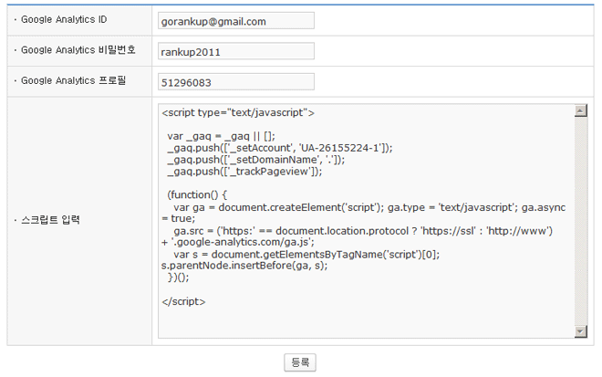

사이트 분석 스크립트 등록 |
 |
-
구글 웹로그 분석(google analytics) 스크립트 등록 방법
- 구글 Analytics는 웹로그 분석 서비스로 이 서비스를 이용하기 위해서는 우선 구글계정에 가입하셔야 합니다.
- 구글 Analytics를 이용하면 광고 타겟팅의 정확도를 높이고 마케팅 전략을 강화하며 웹사이트의 전환 실적을 개선할 수 있습니다.1. 구글 Analytics(http://www.google.co.kr/analytics)에 접속합니다. Analytics를 처음 사용하시는 분은 "지금 가입하기"를 클릭해서 Analytics에 가입합니다.구글 Analytics 2. 구글 계정정보를 입력하고 로그인합니다. 구글계정이 없으신 분은 우측 상단의 "새 구글계정 가입"을 클릭해서 구글계정을 만들어 주십시오. 구글 Analytics 로그인3."Google Analytics 가입"을 클릭해서 Analytics 계정을 만들어 주십시오.
구글 Analytics 로그인3."Google Analytics 가입"을 클릭해서 Analytics 계정을 만들어 주십시오.Analytics 가입 4. 추적할 사이트의 URL, 계정이름을 입력한 후 약관에 동의하고 "새 계정 만들기"를 클릭합니다.Analytics 계정만들기 5. 아래 그림에 표시한 추적코드(②)를 복사해 주십시오. 추적코드 복사6. "기타로그분석관리> 기본환경설정"에 추적코드와 함께 Google Analytics 의 ID, 비밀번호, 프로필번호를 등록합니다.
추적코드 복사6. "기타로그분석관리> 기본환경설정"에 추적코드와 함께 Google Analytics 의 ID, 비밀번호, 프로필번호를 등록합니다.기타로그분석관리>기본환경설정 ※ 프로필번호는 Analytics 메인페이지에서 사이트프로필 수정을 클릭하면 확인하실 수 있습니다.프로필 확인 7. 정상적으로 구글접속통계가 출력되는지 확인합니다.구글접속 통계